本文档整理大部分公认的、或者少有争议的JavaScript良好书写规范（Best Practice）。一些显而易见的常识就不再论述（比如要用对象支持识别判断，而不是浏览器识别判断；比如不要嵌套太深）。条目顺序按重要级粗略的从高到低排列。
把外部JavaScript文件放在HTML底部我们的目标是相同的：为用户尽可能快地显示内容。当载入一个脚本文件的时候，HTML会停止解析，直到脚本载入完毕。因此，用户可能会长时间对着一个空白的屏幕，看上去什么都没有发生。如果你的JavaScript代码只是增加一些功能（比如按钮的点击动作），那么尽管大胆地把文件引用放在HTML底部吧（就在就在</body>之前），你会看到明显的速度提升。如果是用于其他目的的脚本文件，则需要慎重地考虑。但无论如何，这毫无疑问是一个非常值得考虑的地方。
循环遍历一个数组
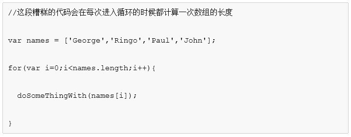 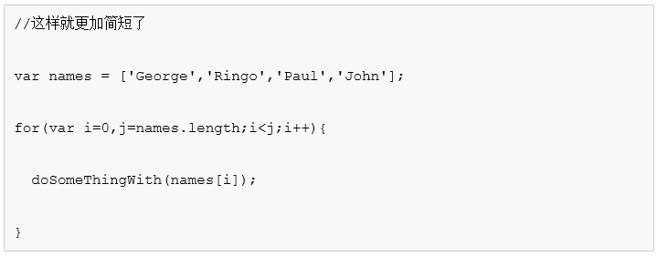 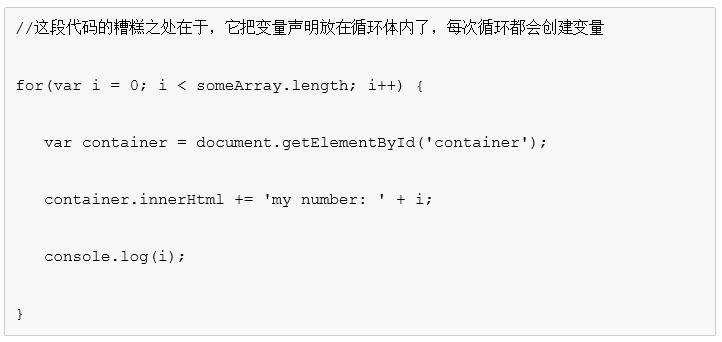 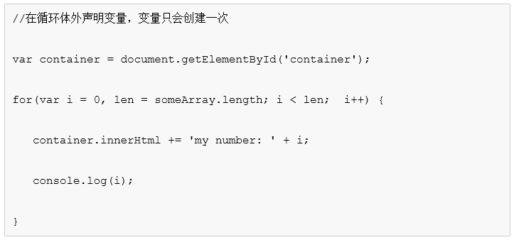 用尽量简短的代码如果可以增加可读性的话，那么使用代码的简短格式是有意义的，下面是一份不完全的列表：
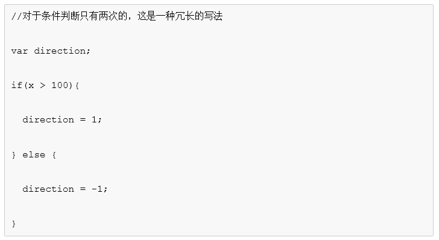 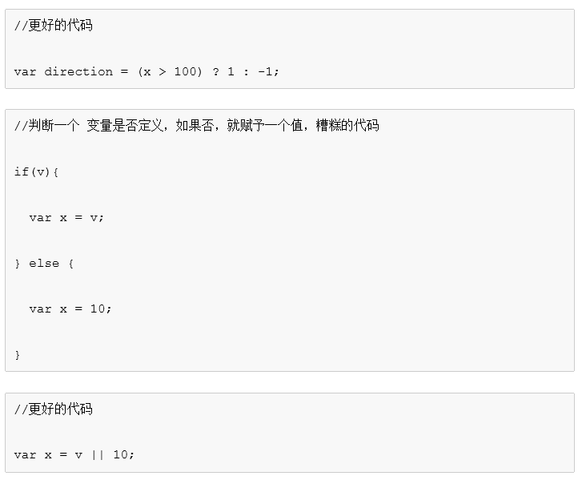 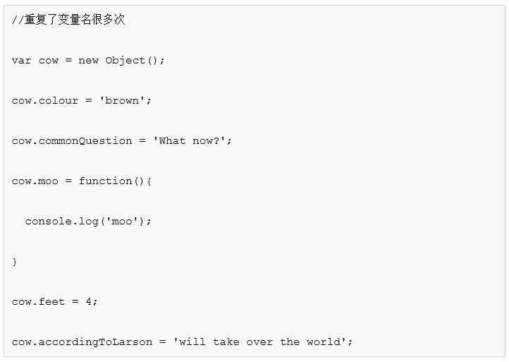 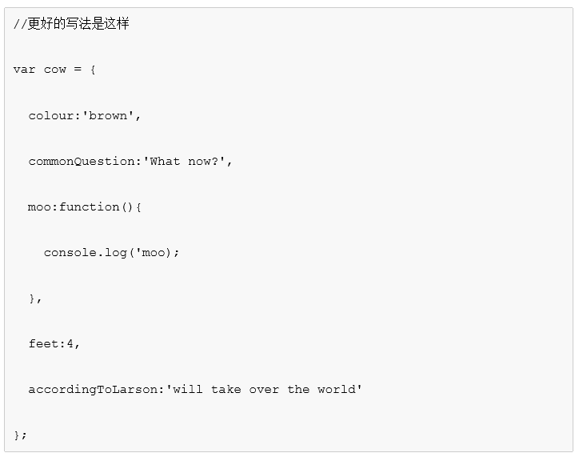 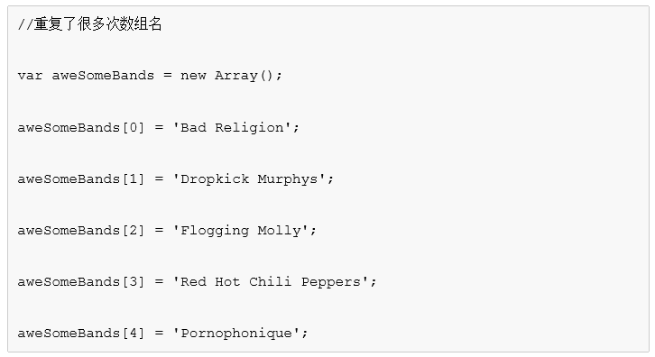 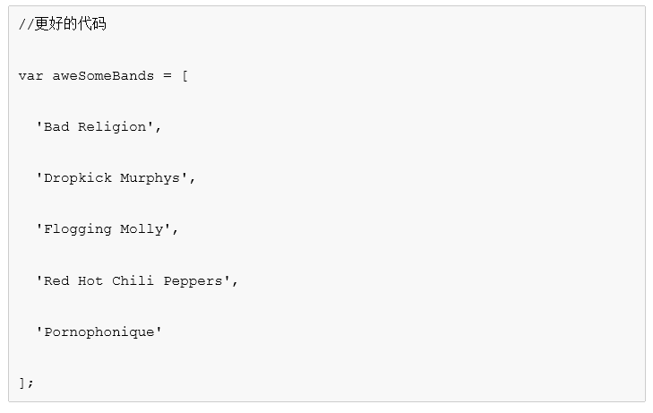 单引号和双引号为了避免混乱，我们建议在HTML中使用双引号，在JavaScript中使用单引号。
避免混入其他技术CSS:假设我们的页面上有必须填入的输入框（拥有class“mandatory”），如果它没有被输入数据，周围就会加上红色边框
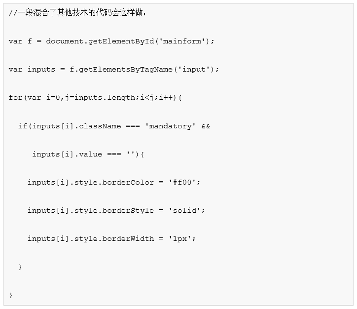 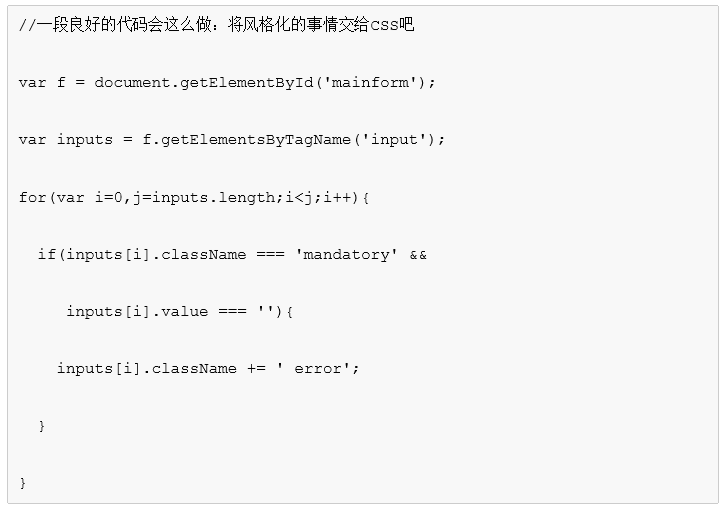HTML:假设我们有内多HTML内容需要用JavaScript来载入，那么使用Ajax载入单独的文件，而不是通过JavaScript处理DOM，后者会让代码难以处理，并且出现难以维护的兼容性问题。
验证JavaScript代码浏览器处理JavaScript代码可能会非常宽容，但我建议你不要依赖浏览器的解析能力，因此养成了懒散的编码习惯。最简单的检测你的代码质量的方法是通过一个在线JavaScript验证工具JSLint 。
使用更简单的格式来写innerscript<script type="text/javascript" >
...
</script >
总是检查数据要检查你的方法输入的所有数据，一方面是为了安全性，另一方面也是为了可用性。用户随时随地都会输入错误的数据。这不是因为他们蠢，而是因为他们很忙，并且思考的方式跟你不同。用typeof方法来检测你的function接受的输入是否合法。
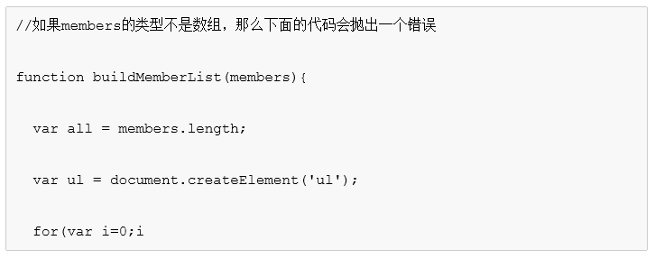 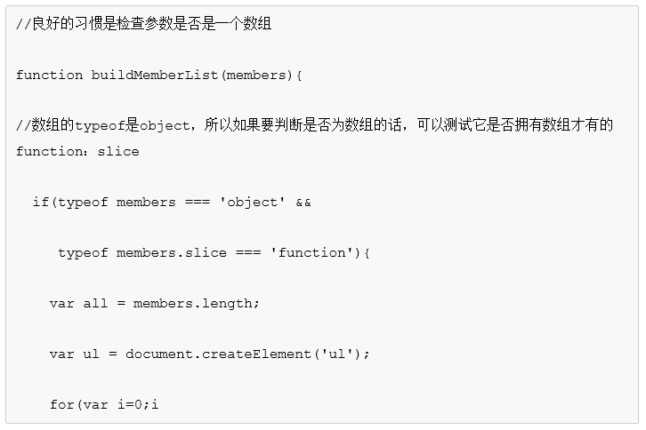另一个安全隐患是直接从DOM中取出数据使用。比如说你的function从用户名输入框中取得用户名做某项操作，但用户名中的单引号或者双引号可能会导致你的代码崩溃。
避免全局变量全局变量和全局函数是非常糟糕的。因为在一个页面中包含的所有JavaScript都在同一个域中运行。所以如果你的代码中声明了全局变量或者全局函数的话，后面的代码中载入的脚本文件中的同名变量和函数会覆盖掉（overwrite）你的。
声明变量的话，总是用varJavaScript中的变量可能是全局域或者局部域，用var声明的话会更加直观。
使用前置+号来把字符串转化为数字JavaScript中，“+”操作符即被用来作为数字加，也被用来连接字符串。如果需要求表单中几个值的和，那么用+可能会出现问题。
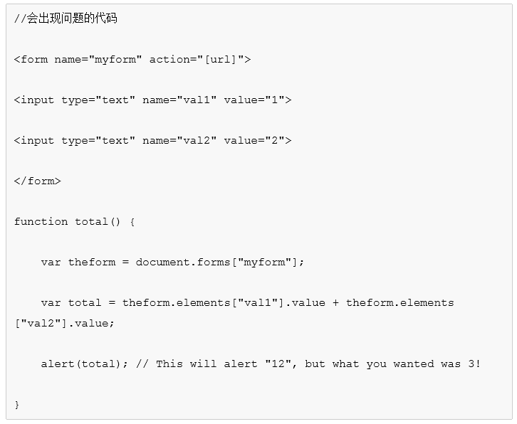 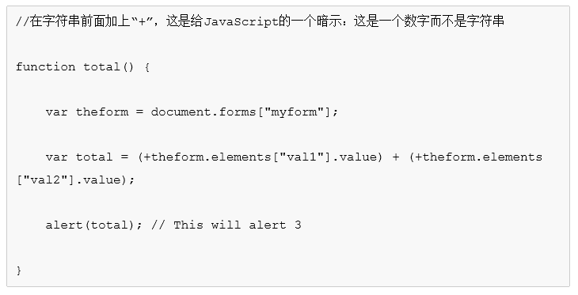 避免使用eval()方法JavaScript中的eval()方法是在运行时把任何代码当作对象来计算/运行的方法。实际上由于安全性的缘故，大部分情况下都不应该用eval()，总是有一种更“正确”的方法来完成同样的工作的。基本原则是，eval is evil，在任何时候都不要用它，除非你是一个老手，并且知道你不得不这样做。
for in语句遍历一个对象中的所有条目的时候，用for in语句是非常方便的。但有时候我们不需要遍历对象中的方法，如果不需要的话，可以加上一条filter。
不要偷懒省略”和{} 获取对象属性的时候用方括号而不是点号如果是用点号标记取得对象的属性，属性名称是硬编码，无法在运行时更改；而用方括号的话，JavaScript会求得方括号内值然后通过计算结果来求得属性名。也就是说用方括号标记的方式，属性名称可以是硬编码的，也可以是变量或者函数返回值。
假设JavaScript会被禁用我知道这样的假设会伤害JavaScript开发者的感情，可是在目前数据不明朗的情况下我们为了安全起见应该做这样的假设。这是渐进增强中很重要的一部分
使用JavaScript库现在有很多非常流行的JavaScript库，比如YUI和jQuery、Dojo。它们的缺点是需要下载一个额外的文件，优点却更多：兼容性更强；代码更简单易懂。好的库有很多，但你不应该在一个项目中把它们都用上，因为可能存在兼容性问题。选择一个自己习惯的就好。不要忘记的一点是，原生的JavaScript毫无疑问更快，如果是小规模的使用，最好还是用原生的。